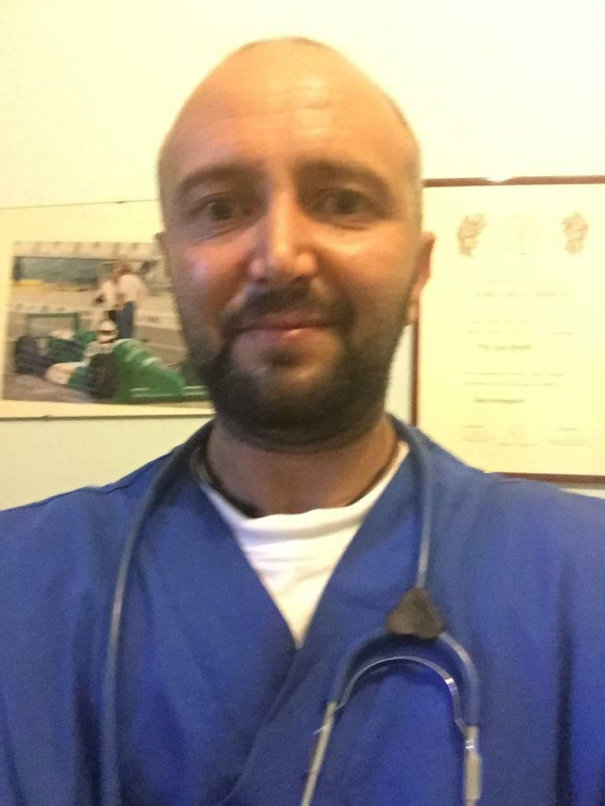

Dott. Samuele Mirko Croci
Fisioterapista specializzato in rieducazione del pavimento pelvico dal 2000, riceve nel proprio studio di Gorla Minore.

Fisioterapista
Il modo più efficace di trattare un paziente con problematiche del pavimento pelvico è un approccio multidisciplinare.
Fisioterapista specializzato in rieducazione del pavimento pelvico dal 2000, il Dott. Croci tratta pazienti di ogni età con sintomi vescicali, anorettali, sessuali e dolore perineale. Riceve nel proprio studio di Gorla Minore e lavora in dialogo con le altre figure che seguono il paziente: ginecologo, urologo, sessuologo, neurologo.
Accanto alla rieducazione perineale si occupa di rieducazione posturale con il Metodo Mézières, per il trattamento del mal di schiena e dei dismorfismi come scoliosi e ipercifosi, soprattutto in età evolutiva.
La comunicazione è chiara e accessibile: disturbi che incidono sulla vita personale, relazionale e sociale vanno spiegati, compresi e affrontati senza imbarazzo.
- Diploma Universitario in Fisioterapia, Università di Pavia, 110/110 e lode.
- Formazione UROG di Verona: attestati di I e II livello in riabilitazione uro-ginecologica, urologica, colonproctologica e pediatrica; dal 2006 tutor e poi docente.
- Fisioterapista Federale Svizzero: quattro anni di pratica a Lugano, con perfezionamento in terapia manuale e patologie della spalla.
- Laurea in Fisioterapia, Università dell’Insubria, 110/110 e lode.
- Diploma Metodo Mézières (rieducazione posturale) e formazione sul Protocollo Stanford per il dolore pelvico cronico.
Prenoti la sua visita
Chiami lo studio dal lunedì al venerdì, in orario d’ufficio.